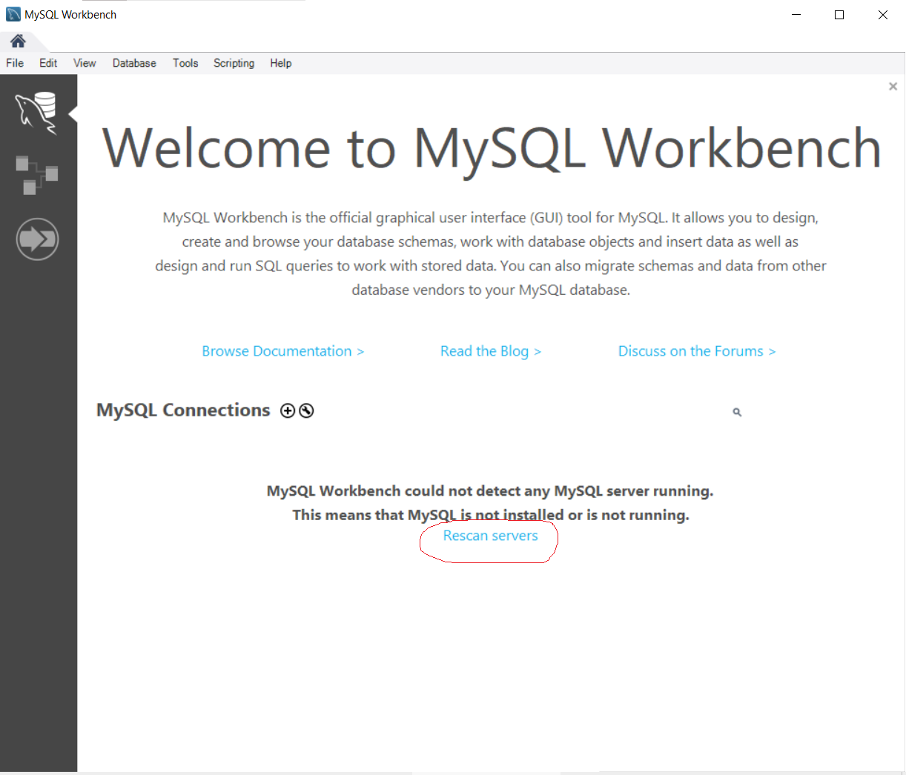

Đầu tiên ta nhấn vào Rescan servers để tìm MySQL Server mình vừa cài đặt
Tiếp theo ta nhấp đúp chuột vào Server vừa hiện ra
Màn hình "Connect to MySQL Server" xuất hiện, ta nhập mật khẩu cho tài khoản root mình vừa tạo và nhấn "Save password in vault"

Giao diện chính của MySQL Workbench hiện ra, ta viết lệnh truy vấn SQL, và nhấn vào biểu tượng sấm sét vàng để thực thi câu lệnh truy vấn SQL

Ở thanh navigator bên trái, sẽ hiển thị các database mà MySQL Server đang lưu trữ
Tuy nhiên, những Database mà ta mới tạo sẽ không xuất hiện ngay, mà mình cần phải Refresh lại để nó xuất hiện như trong hình